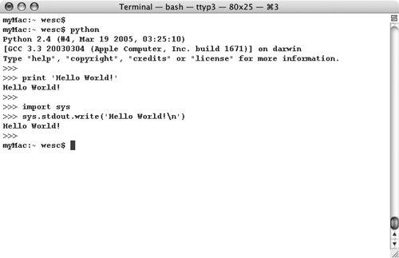
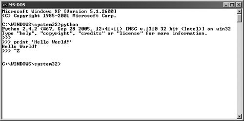
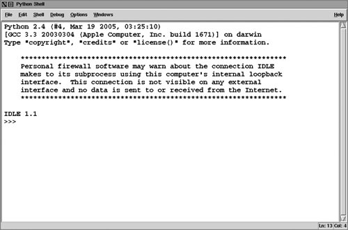
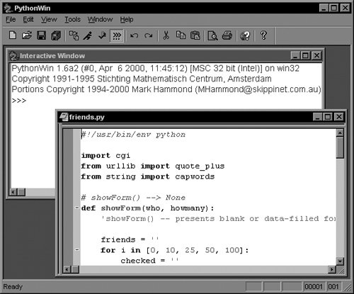
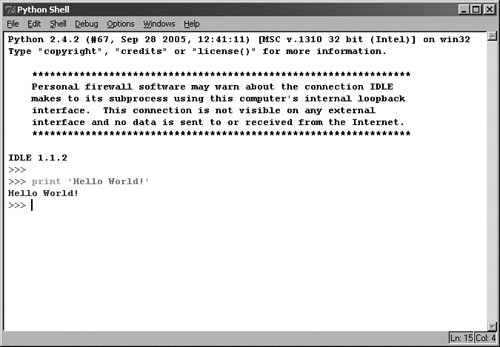

1.5. Running PythonThere are three different ways to start Python. The simplest way is by starting the interpreter interactively, entering one line of Python at a time for execution. Another way to start Python is by running a script written in Python. This is accomplished by invoking the interpreter on your script application. Finally, you can run from a graphical user interface (GUI) from within an integrated development environment (IDE). IDEs typically feature additional tools such as an integrated debugger, text editor, and support for a wide range of source code control tools such as CVS. 1.5.1. Interactive Interpreter from the Command LineYou can enter Python and start coding right away in the interactive interpreter by starting it from the command line. You can do this from Unix, DOS, or any other system that provides you a command-line interpreter or shell window. One of the best ways to start learning Python is to run the interpreter interactively. Interactive mode is also very useful later on when you want to experiment with specific features of Python. Unix (Linux, MacOS X, Solaris, *BSD, etc.)To access Python, you will need to type in the full pathname to its location unless you have added the directory where Python resides to your search path. Common places where Python is installed include /usr/bin and /usr/local/bin. We recommend that you add Python (i.e., the executable file python, or jpython if you wish to use the Java version of the interpreter) to your search path because you do not want to have to type in the full pathname every time you wish to run interactively. Once this is accomplished, you can start the interpreter with just its name. To add Python to your search path, simply check your login startup scripts and look for a set of directories given to the set path or PATH= directive. Adding the full path to where your Python interpreter is located is all you have to do, followed by refreshing your shell's path variable. Now at the Unix prompt (% or $, depending on your shell), you can start the interpreter just by invoking the name python (or jpython), as in the following. $ python Once Python has started, you'll see the interpreter startup message indicating version and platform and be given the interpreter prompt ">>>" to enter Python commands. Figure 1-1 is a screen shot of what it looks like when you start Python in a Unix (MacOS X) environment. Figure 1-1. Starting Python in a Unix (MacOS X) windowWindows/DOSTo add Python to your search path, you need to edit the C:\autoexec.bat file and add the full path to where your interpreter is installed. It is usually either C:\Python or C:\Program Files \Python (or its short DOS name equivalent C:\Progra~1\Python). From a DOS window (either really running in DOS or started from Windows), the command to start Python is the same as Unix, python (see Figure 1-2). The only difference is the prompt, which is C:\>. C:\>python Figure 1-2. Starting Python in a DOS/command windowCommand-Line OptionsWhen starting Python from the command-line, additional options may be provided to the interpreter. Here are some of the options to choose from:
1.5.2. As a Script from the Command LineUnix (Linux, MacOS X, Solaris, *BSD, etc.)From any flavor of Unix, a Python script can be executed by invoking the interpreter on your application from the command line, as in the following: $ python script.py Python scripts end with a file extension of .py, as indicated above. It is also possible in Unix to automatically launch the Python interpreter without explicitly invoking it by name from the command line. If you are using any Unix-flavored system, you can use the shell-launching ("sh-bang") first line of your program: #!/usr/local/bin/python The file path, the part that follows the #!, is the full path location of the Python interpreter. As we mentioned before, it is usually installed in /usr/local/bin or /usr/bin. If not, be sure to get the exact pathname correct so that you can run your Python scripts. Pathnames that are not correct will result in the familiar Command not found error message. As a preferred alternative, many Unix systems have a command named env, installed in either /bin or /usr/bin, which will look for the Python interpreter in your path. If you have env, your startup line can be changed to something like this: #!/usr/bin/env python or, if your env is located in /bin, #!/bin/env python env is useful when you either do not know exactly where the Python executable is located, or if it changes location often, yet still remains available via your directory path. Once you add the proper startup directive to the beginning of your script, it becomes directly executable, and when invoked, loads the Python interpreter first, then runs your script. As we mentioned before, Python no longer has to be invoked explicitly from the command. You only need the script name: $ script.py Be sure the file permission mode allows execution first. There should be an 'rwx' permissions getting for the user in the long listing of your file. Check with your system administrator if you require help in finding where Python is installed or if you need help with file permissions or the chmod(CHange MODe) command. Windows/DOSThe DOS command window does not support the auto-launching mechanism; however, at least with WinXP, it is able to do the same thing as Windows: it uses the "file type" interface. This interface allows Windows to recognize file types based on extension names and to invoke a program to handle files of predetermined types. For example, if you install Python with PythonWin, double-clicking on a Python script with the .py extension will invoke Python or PythonWin IDE (if you have it installed) to run your script. Thus, running the following will have the same effect as double-clicking on it: C:\> script.py So now both Unix-based and Win32 systems can launch Python scripts without naming Python on the command line, but you can always fall back on it if just calling the script leads to an error like "command is not recognized." 1.5.3. In an Integrated Development EnvironmentYou can run Python from a graphical user interface (GUI) environment as well. All you need is a GUI application on your system that supports Python. If you have found one, chances are that it is also an IDE (integrated development environment). IDEs are more than just graphical interfaces. They typically have source code editors and trace and debugging facilities. Unix (Linux, MacOS X, Solaris, *BSD, etc.)IDLE is the very first Unix IDE for Python. It was also developed by Guido van Rossum and made its debut in Python 1.5.2. IDLE stands for IDE with a raised "L," as in Integrated DeveLopment Environment. Suspiciously, IDLE also happens to be the name of a Monty Python troupe member. Hmmm.... IDLE is Tkinter-based, thus requiring you to have Tcl/Tk installed on your system. Current distributions of Python include a minimal subset of the Tcl/Tk library so that a full install is no longer required. Also, if Python was automatically installed on your system or if you have a Python RPM, chances are it does not include IDLE or Tkinter, so look for both before trying to run IDLE. (There is actually a separate Tkinter RPM that you can download along with the Python one if you want it.) If you build Python yourself and Tk libraries are available, then Tkinter will be automatically built along with Python, and both Tkinter and IDLE will be installed when Python is. If you want to run IDLE, you will find it where your standard library is installed: /usr/local/lib/python2.x/idlelib/idle.py. If you build and install Python yourself, you may find a shortcut script called idle in /usr/local/bin allowing you to just launch IDLE from your shell command-line prompt. A screen shot of IDLE in Unix appears in Figure 1-3. Figure 1-3. Starting IDLE in UnixMacOS X is very Unix-like (based on the Mach kernel with BSD services). Python is now compiled for MacOS X with the traditional Unix build tools. The MacOS X distributions come with a compiled Python interpreter; however, none of the special Mac-oriented tools (i.e., GNU readline, IDE, etc.) are installed. The same applies for Tkinter and IDLE. You tend to go download and build your own, but be careful: sometimes it is tricky to decouple your new Python install from the Apple factory version. Do your research carefully first. You can also get Python for MacOS X from Fink/FinkCommander and DarwinPorts: For the most up-to-date Mac stuff and information for Python, visit: Another option would be to download a MacOS X Universal binary from the Python Web site. This disk image (DMG) file requires at least version 10.3.9 and will run on both PowerPC- and Intel-based Macs. WindowsPythonWin is the first Windows interface for Python and is an IDE with a GUI. Included with the PythonWin distribution are Windows API, and COM (Component Object Model, a.k.a. OLE [Object Linking and Embedding] and ActiveX) extensions. PythonWin itself was written to the MFC (Microsoft Foundation Class) libraries, and it can be used as a development environment to create your own Windows applications. You can download and install it from the Web sites shown on the next page. PythonWin is usually installed in the same directory as Python, in its own subdirectory, C:\Python2x\Lib\site-packages\pythonwin as the executable pythonwin.exe. PythonWin features a color editor, a new and improved debugger, interactive shell window, COM extensions, and more. A screen snapshot of the PythonWin IDE running on a Windows machine appears in Figure 1-4. Figure 1-4. PythonWin environment in WindowsYou can find out more about PythonWin and the Python for Windows Extensions (also known as "win32all") at the following locations organized by Mark Hammond: IDLE is also available on the Windows platform, due to the portability of Tcl/Tk and Python/Tkinter. It looks similar to its Unix counterpart (Figure 1-5). Figure 1-5. Starting IDLE in WindowsFrom Windows, IDLE can be found in the Lib\idlelib subdirectory where your Python interpreter is found, usually C:\Python2x. To start IDLE from a DOS command window, invoke idle.py. You can also invoke idle.py from a Windows environment, but that starts an unnecessary DOS window. Instead, double-click on idle.pyw. Files ending in .pyw will not open a DOS command window to run the script in. In fact, your author just creates a shortcut to C:\Python2x\Lib\idlelib\idle.pyw on the desktop that can be double-clicked ... simple! 1.5.4. Other IDEs and Execution EnvironmentsMany software professionals actually prefer to code in their favorite text editor such as vi(m) or emacs. In addition to these and the IDEs mentioned in the previous section, there are good number of Open Source and commercial IDEs as well. Here is a short list: Open Source
Commercial
General overall IDE list
Core Tip: Running the code examples in this book
|